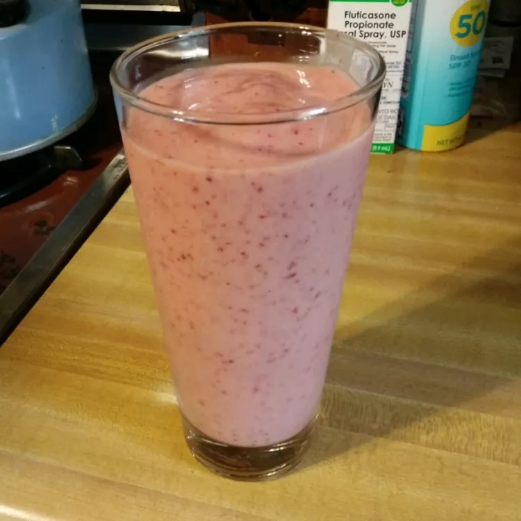
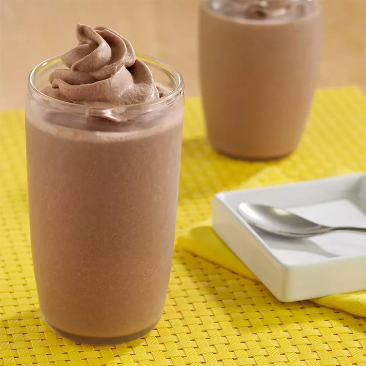

Odin Recipes
All Fruit Smoothies

Ingredients
- 1 cup pineapple juice
- 1 large banana, cut into chunks
- 1 cup frozen strawberries
- 1 cup frozen blueberries
Directions
Step 1
Pour pineapple juice into a blender and add banana, strawberries, and blueberries. Cover and blend until smooth, about 1 minute. Pour into 2 glasses.
Chocolate Peanut Butter Banana Smoothies

Ingredients
- 2 (3.25 ounce) cups Snack Pack® Chocolate Pudding
- 2 tablespoons Peter Pan® Creamy Peanut Butter
- 2 large ripe bananas, cut into pieces
- ¾ cup reduced fat (2%) milk
- 1 cup ice cubes
- Reddi-wip® Chocolate Dairy Whipped Topping
Directions
Step 1
Place all ingredients, except Reddi-wip, in blender container; blend until smooth.
Step 2
Divide evenly among 4 glasses; top each with 1 serving Reddi-wip. Serve immediately.
I MADE IT